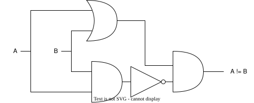
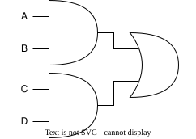
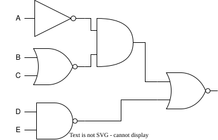

Gates
w2d0
Logistics
Announcements
- Welcome to HW/
asm - Action Items discussion
Building Logic Gates with Transistors
CMOS Gates
- CMOS = Complementary MOS
- The PMOS and NMOS transistors complement each other to form the logic gate
- CMOS is not a type of transistor!
- It is a technology that combines both NMOS and PMOS
- You might also see MOSFET: Metal Oxide Semiconductor Field-Effect Transistor
Pull-up and Pull-down
- Only one network will be on at a time
- The pull-up network drives the output when the output is 1.
- The pull-down network drives the output when the output is 0.
- Output, not input, relevant.
- We’re “closing all the switches” to either power or ground.
CMOS Inverter
- The pull-up network drives the output when the output is 1.
- PMOS “closes the switch” when low.
- Which connects power to out.
- The pull-down network drives the output when the output is 0.
- NMOS “closes the switch” when high.
- Which connects ground to out.
Inverter

Recall
NMOS “closes the switch” when high.

PMOS “closes the switch” when low.

General CMOS Gate Recipe
- Figure out pulldown network that does what you want (e.g., what gives
0) - Build the “opposite” version of that network for “pull up”
- Combine the two, splitting inputs across them.
- Generally, invert a network by swaping series/parallel and swapping PMOS/NMOS.
What does this compute?
- For power in draw.io, use “Vdd”, read more

XNOR
- How would we make this?
| \(A\) | \(B\) | \(A == B\) |
|---|---|---|
| 0 | 0 | 1 |
| 0 | 1 | 0 |
| 1 | 0 | 0 |
| 1 | 1 | 1 |
Use Inverters!
- Can use inverter notation; don’t have to.

Transistor level…
- Does not scale!
- What should we do?
- Abstract again!
- Logic gates are next!
- But before we jump to the next level of abstraction, let’s over some standard, easy-to-wire primitives
- NAND and NOR
Universality
- NAND and NOR are universal!
- Any Boolean function can be built from them!
CMOS NOR
Truth Table
- Specify all combinations of \(A\) and \(B\)
| \(A\) | \(B\) | \(Y\) |
|---|---|---|
| 0 | 0 | 1 |
| 0 | 1 | 0 |
| 1 | 0 | 0 |
| 1 | 1 | 0 |
Pull Up
- Check the “yes”/“high”/“true”/
1
| \(A\) | \(B\) | \(Y\) |
|---|---|---|
| 0 | 0 | 1 |
| 0 | 1 | 0 |
| 1 | 0 | 0 |
| 1 | 1 | 0 |
Pull Up CMOS
- Specify the pull-up part of CMOS.

Pull Down
- Check the “no”/“low”/“false”/
0
| \(A\) | \(B\) | \(Y\) |
|---|---|---|
| 0 | 0 | 1 |
| 0 | 1 | 0 |
| 1 | 0 | 0 |
| 1 | 1 | 0 |
Pull Down CMOS
- Specify the pull-down part of CMOS.

CMOS NOR
| \(A\) | \(B\) | \(Y\) | network |
|---|---|---|---|
| 0 | 0 | 1 | pull-up |
| 0 | 1 | 0 | pull-down |
| 1 | 0 | 0 | pull-down |
| 1 | 1 | 0 | pull-down |
Altogether

CMOS NOR

| \(A\) | \(B\) | \(Y\) |
|---|---|---|
| 0 | 0 | 1 |
CMOS NOR

| \(A\) | \(B\) | \(Y\) |
|---|---|---|
| 0 | 1 | 0 |
Others similar
- We leave these to the interested student.
| \(A\) | \(B\) | \(Y\) |
|---|---|---|
| 1 | 0 | 0 |
| 1 | 1 | 0 |
CMOS NAND
Truth Table
- Specify all combinations of \(A\) and \(B\)
| \(A\) | \(B\) | \(Y\) |
|---|---|---|
| 0 | 0 | 1 |
| 0 | 1 | 1 |
| 1 | 0 | 1 |
| 1 | 1 | 0 |
Pull Up
- Check the “yes”/“high”/“true”/
1
| \(A\) | \(B\) | \(Y\) |
|---|---|---|
| 0 | 0 | 1 |
| 0 | 1 | 1 |
| 1 | 0 | 1 |
| 1 | 1 | 0 |
Pull Up CMOS
- Specify the pull up part of CMOS.

Pull Down
- Check the “no”/“low”/“false”/
0
| \(A\) | \(B\) | \(Y\) |
|---|---|---|
| 0 | 0 | 1 |
| 0 | 1 | 1 |
| 1 | 0 | 1 |
| 1 | 1 | 0 |
Pull Down CMOS
- Specify the pull-down part of CMOS.

CMOS NOR
| \(A\) | \(B\) | \(Y\) | network |
|---|---|---|---|
| 0 | 0 | 1 | pull-up |
| 0 | 1 | 1 | pull-up |
| 1 | 0 | 1 | pull-up |
| 1 | 1 | 0 | pull-down |
Altogether

Exercise
- 10 minutes
- Trace out each of the following
- Draw.io or jspaint.app
| \(A\) | \(B\) | \(Y\) |
|---|---|---|
| 0 | 0 | 1 |
| 0 | 1 | 1 |
| 1 | 0 | 1 |
| 1 | 1 | 0 |
CMOS AND
Uh oh!
- We discover a novel constraint.
CMOS AND
| \(A\) | \(B\) | \(Y\) |
|---|---|---|
| 0 | 0 | 0 |
| 0 | 1 | 0 |
| 1 | 0 | 0 |
| 1 | 1 | 1 |
We would try…
- We would just place a pull-up on the last row:
| \(A\) | \(B\) | \(Y\) |
|---|---|---|
| 0 | 0 | 0 |
| 0 | 1 | 0 |
| 1 | 0 | 0 |
| 1 | 1 | 1 |
Pull Up Candidate
- We would naturally use NMOS transistors - which close the circuit in response to a “high”/“true”/“yes”/
1on the gate. - We place them in a series.

This breaks the law:
- The law: can’t put NMOS on “top”
- That’s two NMOS on top.
Solution
- Noted geniuses us have previously more or less solved this.
- We made NAND, which doesn’t have a violating NMOS.
Comparison
- We also have previously made NOT.
| \(A\) | \(B\) | NAND | AND |
|---|---|---|---|
| 0 | 0 | 1 | 0 |
| 0 | 1 | 1 | 0 |
| 1 | 0 | 1 | 0 |
| 1 | 1 | 0 | 1 |
NOT NAND gives AND
- We simply take NAND and put an inverter on the out.

CMOS OR
This should be easy
- Surely we won’t encounter the same secret problem as AND.
CMOS OR
| \(A\) | \(B\) | \(Y\) |
|---|---|---|
| 0 | 0 | 0 |
| 0 | 1 | 1 |
| 1 | 0 | 1 |
| 1 | 1 | 1 |
We would try
- Let’s look at these:
| \(A\) | \(B\) | \(Y\) |
|---|---|---|
| 0 | 0 | 0 |
| 0 | 1 | 1 |
| 1 | 0 | 1 |
| 1 | 1 | 1 |
CMOS OR
- CMOS OR also requires:
- NMOS gates (which close circuits to
1) - In order to pass through a
1on the “pull-up” - This is a “rule violation”.
- NMOS gates (which close circuits to
- Pesky physics getting into our perfectly good computer science once again!
Use the hack
- Just take NOR and NOT it.

Assessing Costs
Why it matters
| Gate | # of Transistors |
|---|---|
| NOT | 2 |
| AND | 6 |
| OR | 6 |
| NAND | 4 |
| NOR | 4 |
| XOR | 12 |
| XNOR | 12 |
Design larger systems!
- We need to start somewhere – usually with a functional specification
- “If \(C\) is
1then copy \(B\) to \(Y\), otherwise copy \(A\) to \(Y\)- What?
Truth Tables
- “Truth tables” are a concise description of every combinational function the combinational system’s function
- An output is specified for every input combination.
Inverter/Not Gate
- NOT and identity are minimal examples.
| A | Y |
|---|---|
| 0 | 1 |
| 1 | 0 |
We note
- We do note however there are four (4) possible “gates” that take a single input
| \(A\) | 0 |
1 |
= |
! |
|---|---|---|---|---|
| 0 | 0 | 1 | 0 | 1 |
| 1 | 0 | 1 | 1 | 0 |
What can we build?
- Thus far we have looked at only a subset of possible gates.
| \(A\) | \(B\) | & |
| |
!& |
!| |
|---|---|---|---|---|---|
| 0 | 0 | 0 | 0 | 1 | 1 |
| 0 | 1 | 0 | 1 | 1 | 0 |
| 1 | 0 | 0 | 1 | 1 | 0 |
| 1 | 1 | 1 | 1 | 0 | 0 |
How many?
- How many gates could we build?
- We note:
- We could ignore either of \(A\) or \(B\)
- We could ignore both of \(A\) and \(B\)
- We can take any expression over \(A\) and \(B\)
- We note:
The answer
- We note there are 4 possible combinations of inputs.
- How many unique possible, say, “arrays” of output can be expressed with 4 possible combinations… say, four bits of information.
- With four bits of information, we can express \(2^4 = 16\) possible gates.
They are
| \(A\) | \(B\) | 0 |
& |
< |
A |
> |
B |
^ |
| |
!| |
!^ |
!B |
<= |
!A |
>= |
!& |
1 |
|---|---|---|---|---|---|---|---|---|---|---|---|---|---|---|---|---|---|
| 0 | 0 | 0 | 0 | 0 | 0 | 0 | 0 | 0 | 0 | 1 | 1 | 1 | 1 | 1 | 1 | 1 | 1 |
| 0 | 1 | 0 | 0 | 0 | 0 | 1 | 1 | 1 | 1 | 0 | 0 | 0 | 0 | 1 | 1 | 1 | 1 |
| 1 | 0 | 0 | 0 | 1 | 1 | 0 | 0 | 1 | 1 | 0 | 0 | 1 | 1 | 0 | 0 | 1 | 1 |
| 1 | 1 | 0 | 1 | 0 | 1 | 0 | 1 | 0 | 1 | 0 | 1 | 0 | 1 | 0 | 1 | 0 | 1 |
(We note that many of these are BORING)
Composition
- We note that many can be constructed using only a few of the CMOS gates.
- We recall the gates from the Circuits lecture.
- We have made all of these now!
- We review them on the next slide…
| Name | Symbol |
|---|---|
| Buffer | |
| Inverter | |
| AND | |
| OR | |
| XOR |
We note
- AND is just NAND with an inverter.
- OR is just NOR with an inverter.
Weird ones
- What about \(B>A\)
| \(A\) | \(B\) | \(B>A\) |
|---|---|---|
| 0 | 0 | 0 |
| 0 | 1 | 1 |
| 1 | 0 | 0 |
| 1 | 1 | 0 |
Thought process
| \(A\) | \(B\) | \(B>A\) |
|---|---|---|
| 0 | 0 | 0 |
| 0 | 1 | 0 |
| 1 | 0 | 1 |
| 1 | 1 | 0 |
- We want one
1and three0- Sounds like AND
- We want
1if \(B=1\)- Sounds like AND
- We want
1if \(A=0\)- Sounds like the inversion of AND.
Solution
| \(A\) | \(B\) | \(B>A\) |
|---|---|---|
| 0 | 0 | 0 |
| 0 | 1 | 0 |
| 1 | 0 | 1 |
| 1 | 1 | 0 |
Composing gates
- How many different gates do we really need?
- We can always do it with 3 different types of gates (AND, OR, INVERT)…
- Sometimes with 2…
- But, can we use fewer?
XOR with AND, OR, NOT!
| A | B | Y |
|---|---|---|
| 0 | 0 | 0 |
| 0 | 1 | 1 |
| 1 | 0 | 1 |
| 1 | 1 | 0 |
Challenge question: convert this use ONLY NAND gates. How many NAND gates did you use?
AND, OR, NOT

NAND
- Left as exercise
One gate will do!
- A universal gate is one that can be used to implement ANY combinatorial function.
- There are many universal gates, but not all gates are universal.
- NANDs and NORs are universal!
- Usually the easiest way to show universality is to make AND, OR, NOT.
NAND
NOR
- Left as an exercise.
Equations from Diagram
Adopt Convention
- We \(AB = A \land B\) and \(A+B = A \lor B\)
- Why?
- Can also use prefix notation, like this:
What is this?

\(AB + CD\)
Steps
- Create subequations at each gate.
- Combine, though be attentive to order-of-operations.
- Iterate through diagram
Diagram from Equations
What would this be?
\((\neg A)(\neg (B+C))(\neg(DE))\)

Steps
- Choose the appropriate gate for each pairing
- Wire together subexpressions
- Iterate through equation
Truth Table from Equation
What is this?
\(Y = A + \neg B\)
| A | B | Y |
|---|---|---|
| 0 | 0 | 1 |
| 0 | 1 | 0 |
| 1 | 0 | 1 |
| 1 | 1 | 1 |
Steps
- Substitute in input values and compute.
- You can also automate:
Equation from Truth Table
The Hard One
- This should immediately be nontrivial to you.
| A | B | C | Y |
|---|---|---|---|
| 0 | 0 | 0 | 1 |
| 0 | 0 | 1 | 0 |
| 0 | 1 | 0 | 1 |
| 0 | 1 | 1 | 0 |
| 1 | 0 | 0 | 0 |
| 1 | 0 | 1 | 1 |
| 1 | 1 | 0 | 0 |
| 1 | 1 | 1 | 0 |
A Systematic Design Approach
- Write the functional spec as a truth table
- Write down a Boolean expression for every ‘1’
- OR together all expressions
- This approach will always give us logic
- it’s systematic!
- it works!
- it’s easy!
- We term this sum-of-products
Straightforward Synthesis
| A | B | C | Y | Expression |
|---|---|---|---|---|
| 0 | 0 | 0 | 1 | \((\neg A)(\neg B)(\neg C)\) |
| 0 | 0 | 1 | 0 | |
| 0 | 1 | 0 | 1 | \((\neg A)B(\neg C)\) |
| 0 | 1 | 1 | 0 | |
| 1 | 0 | 0 | 0 | |
| 1 | 0 | 1 | 1 | \(A(\neg B)C\) |
| 1 | 1 | 0 | 0 | |
| 1 | 1 | 1 | 0 | \(ABC\) |
\[ (\neg A)(\neg B)(\neg C) + (\neg A)B(\neg C) + A(\neg B)C + ABC \]